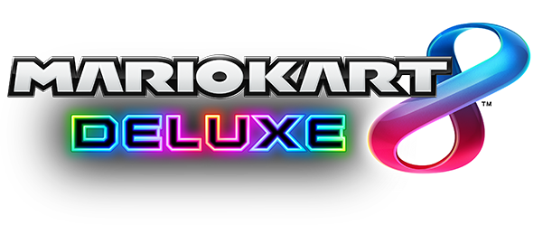

Mario Kart 8 Deluxe

| Release Date: | April 27th, 2017 |
| Genre: | Racing |
| Developer: | Nintendo |
| Platform: | Nintendo Switch |
| Details: | Website |
Mario Kart 8 Deluxe is the flagship Mario Kart game for the Nintendo Switch, one of the first games released for the system. It takes the original game from the Wii U, and introduces some new tracks, modes, and characters to expand the game. They've expanding the game even further with its DLC, doubling the amount of tracks within and adds a few more new characters. The game has evolved a lot from being a "Mario side game" to becoming Nintendo's main racing game for all its series, as it brings in characters and tracks from The Legend of Zelda, Animal Crossing, and Splatoon.
I'm putting game on this now because I've recently revisited it after testing some mods out for a friend. I used to play it whenever my brothers were in town to visit, as we all grew up with Double Dash and Mario Kart Wii, so it was nostalgic for us. They're just way better at the game than I, that we kind of stopped because it got a little frustrating for me. After messing with it for the mod project, it got me into the mood to actually play the game and I had forgotten that I had bought the DLC! I originally had the game 100% completed, but now I have to complete Grand Prix for the DLC cups. After doing a number of these cups, it has reminded me how fun this game is to play.
Gameplay
If you've played a Mario Kart game in the past, this plays roughly the same as previous entries to the series. As you race around various tracks, you'll grab randomly selected items to hinder your opponents or benefit yourself to rise to the top of the pack. You can also drift around corners to get a slight boost of speed, giving more speed the longer the drift lasts. Where the game differs a lot is the physics of the karts. While there are differences between the various karts you can construct, they feel a lot more responsive than previous entries in that I find it easier to make tight turns and feel more in control of my vehicle.
The main methods of play are either races or battle. Races are your standard method of play, in either Grand Prix or Verses, pitting you against other players or computers around a track to fight for the top spot. This makes for great couch co-op fun in racing against your friends, since it's not pure racing due to the items scattered around the course. If you start falling behind, you'll gain access to more powerful items to help catch you back up. It's chaotic fun that can be frustrating at times due to how unfair it can feel at times, but that just comes down to the luck of which items are given. There's also Battle mode, which changes the formula greatly in putting everyone in an arena-like level and have various objectives to become the winner. This ranges from Capture the Flag, Cops & Robbers, to straight up attack others with the same items provided in races.
Visuals & Audio
The game also shines in its visual presentation and phenomenal soundtrack. Despite the high-speed racing, each track fits their theme nicely and isn't a blurry mess as you race around the track. Definitely could find some nice still shots if you could use a camera mode to fly around the map. The soundtrack is filled with so many good tracks, I found myself bopping along with some of the songs while racing. All the returning tracks had their music completely redone to fit the style of the new courses, so a bit of a nostalgic kick when hearing such a well done remaster of some of the songs I grew up with.
I do want to give a special shout-out to the Yoshi's Island course introduced in the DLC, for not only did they embrace the theming of the course, they also modified some of the sound effects and short tracks to fit the course as well. The "race starting" theme is the opening to a level in Yoshi's Island, and the "race ending" theme is the "Course Cleared" theme from the game. It's a really nice touch and made the course feel special.
Overall Thoughts
This is probably one of the top Mario Kart games within the series. The vast options in courses and characters keep the game fresh, the DLC alone could've been it's own Mario Kart using the same engine. The racing feels real responsive, but still presents that chaotic feeling with the items available to players. It can be unfair at times, but the game embraces that and makes it easy for anyone of any skill level to play together. It has a special place in my heart since it's a game that my brothers and I grew up together with, and still brings a smile to my face when we get a chance to play it together, just like old times.